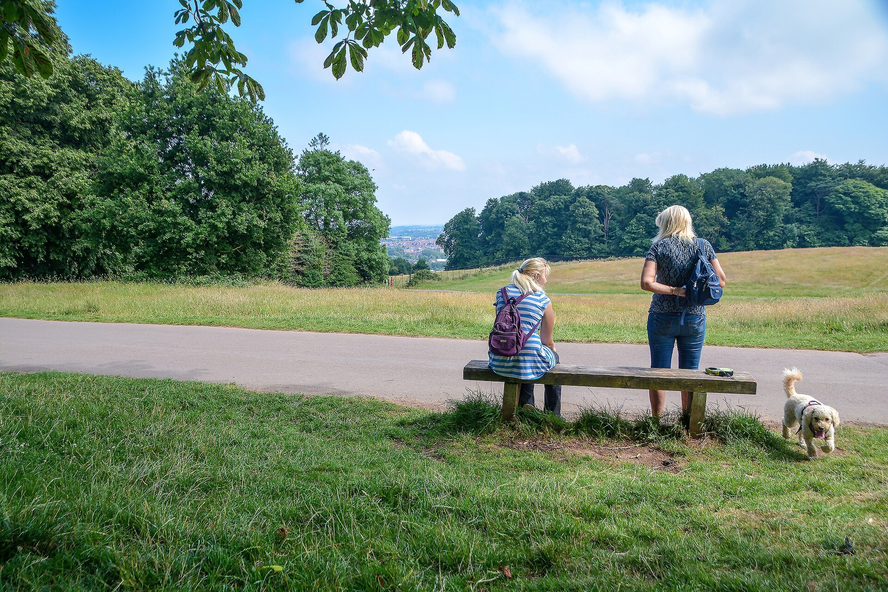

Family Walks
Ashton Court Estate
Woodland paths, open grassland and deer parks on the edge of Bristol.
EXPLORE BRISTOL
About this place
Ashton Court is a good choice when everyone needs space to stretch their legs. Explore the estate on foot, look out over Bristol and watch the deer from the designated paths.
Our family idea: choose a short out-and-back walk before settling down for a picnic. Let children look for different leaf shapes along the way; there is no need to cover the whole estate in one visit.
Find your way
Plan your visit
Ashton Court Estate, Long Ashton, Bristol, BS41 9JN
Arrival postcode: BS41 9JN
Use the estate car parks and check charges and gate closing times on arrival. Use this postcode for the arrival area, then follow local signs to the entrance. Google Maps can use your current location, or you can enter a starting point.
Directions from your locationBefore you go
Check current opening times, access and booking details with the venue.
Explore more family walks →